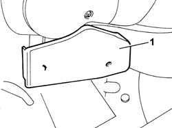
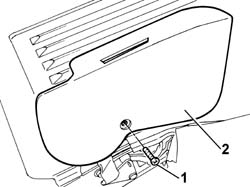
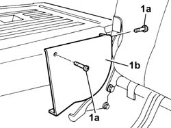
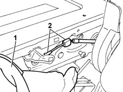
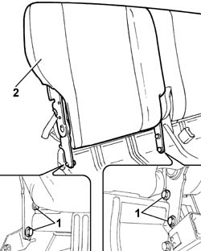
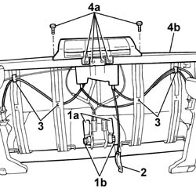

7050C15 FRAMEWORK of single cushion of sliding rear seat - R.R .
- Path
- Procedures > 70 FITTINGS > 7050 REAR SEATS > 7050C SLIDING REAR SEATS > 7050C15 FRAMEWORK of single cushion of sliding rear seat - R.R .
- Kind
- repair procedure (removal / refitting; the operation number is the code)
- Applies to
- all engines; all production periods
- Interactive page
- https://sloeber94.github.io/elrnDB-fPnd/en/#/2753291
Applies to: all engines; all production periods
 Removing
Removing
 Refitting
Refitting7050A50 GUIDES for moving rear seat - R.R. with seat removed
1. Remove the lower side joint cover for the rear seat with split backrest which is a press fit using inner retaining tabs.

Applies to: all engines; all production periods
1. Undo retaining bolts
2. Remove the upper side joint cover, releasing the luggage compartment backrest folding control from it.

Applies to: all engines; all production periods
Fold the backrest downwards using the folding control from the luggage compartment.
1. Undo the fixing bolts (1a) and remove the centre joint cover (1b) for one split backrest.

Applies to: all engines; all production periods
1. Partly lift up the folding backrest cover and upholstery in order to gain access to the folding locking/release cable.
2. Disconnect the cable from the backrest at the points shown.

Applies to: all engines; all production periods
Lift up the backrest using the folding control from the luggage compartment.
1. Undo the bolts fixing the backrest to the cushion frame.
2. Remove the right backrest for the split rear seat.

Applies to: all engines; all production periods
Remove the left backrest for the split rear seat carrying out the same procedure.
1. Undo the fixing bolts (1a) and remove the anchorage rods (1b) for the rear seat belts.
2. Disconnect the seat sliding cable from the luggage compartment.
3. Release the sliding and folding control cables from the bands on the frame.
4. Undo the bolts (4a) fixing the moving control handles and the backrest folding control from the luggage compartment, then remove both devices complete with control cables from the cushion frame (4b).

Applies to: all engines; all production periods
Refitting
RemovingCheck the condition of the sliding rear seat one-piece cushion frame.
Fit the backrest folding control and the handles complete with cables in the special housings in the fame.
Tighten the fixing bolts.
Fasten the sliding and folding control cables to the bands on the frame.
Connect the seat sliding cable from the luggage compartment to the housing in the frame.
Position the anchorage link for one of the rear seat belts.
Tighten the anchorage rod fixing bolt to torque.
 | Fastening | Component | Ø | Value (daNm) |
|---|---|---|---|---|
- | Bolt | REAR SEAT BELT BRANCH WITH ATTACHMENT BUCKLE... | M10 x 1.25 | 4.0 |
Fit the right backrest assembly in the housing in the cushion frame.
Screw in the bolts fixing the right backrest and then tighten to torque.
Connect the folding locking/release cable to the backrest.
Place the folding backrest cover and upholstery back in their original position.
Fit the centre joint cover for the split backrest and tighten the fixing bolts.
Fit the upper side joint cover and tighten the fixing bolt.
Fit the joint cover for the rear seat with a split backrest, press fitting it.
Fit the left backrest for the split rear seat carrying out the same procedure.
Check the operation of the folding device for both backrests.
Check the operation of the rear seat sliding device.
7050A50 GUIDES for moving rear seat - R.R. with seat removed